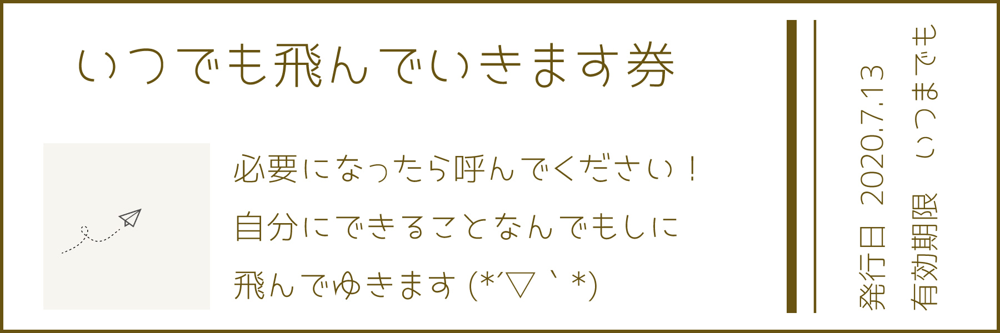

3か月間ありがとうございました！！
今回の研修はオンラインばかりでなかなか距離感を取るのも難しいなか、にのさんのおかげで毎回楽しい雰囲気で研修を行うことが出来ました！！
私はオンラインが苦手で、結構長い間猫被ってねこねこしててごめんなさい…でもにのさんのお話の雑談を楽しみにしていました笑それからちゃつみさんとにのさんとの掛け合いも結構好きでした
正直、Leadersは予想以上に忙しくて、途中で投げ出しそうになってしまうことがありました。というか投げ出しかけたり、本気で取り組めなかったりしました。私はデザインやコーディングが初めてで何からやっていいのかわからないことが多くなにを頑張ったらよいのか、という漠然とした不安に包まれたのがその原因だったように思います。でも最終発表までの7回の研修を通してやっとどんなときに何が必要なのか、なにを調べるべきなのかを知ることが出来ました。それと同時ににのさんが雑談で話していたこのサイトを参考にするといいよー！など言っていたことの重要性を感じました。もう少し早く気づけていたらよかったのですが……これからキャンプまでに見直しとこうと思います。また、これからはメンターとして中高生が困ったときに頼りにしてもらえるよう、努力していきます
それから！！12期はなんだかとっても明るくて濃ゆいメンバーがたくさんいますので、12期全体でWebDを盛り上げていけるよう頑張ります(*´▽｀*)
今後ともよろしくお願いします！！
